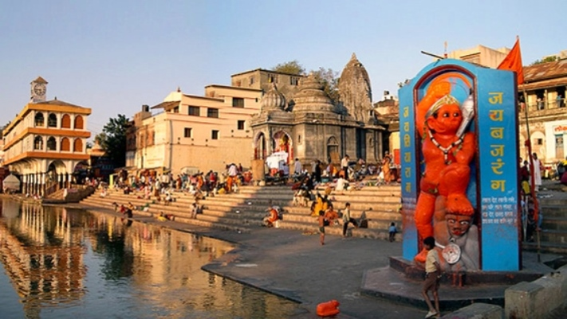
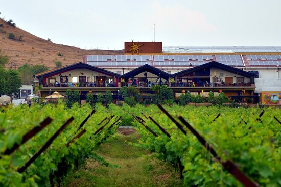
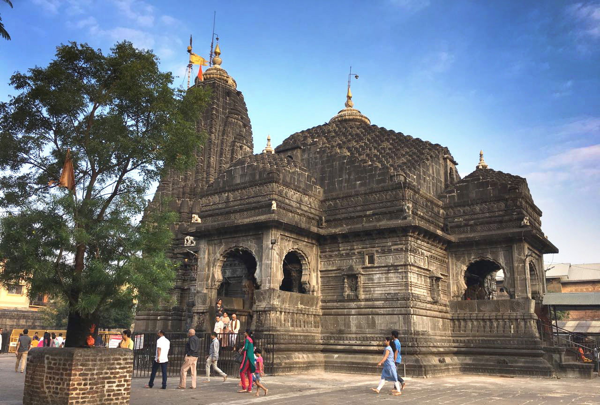

Ramkund
It attracts both pilgrims and tourists to its holy waters.
Lord Ram is believed to have bathed and performed the death
rituals of his father there. The tank was built in 1696.
Unfortunately it is not well maintained.

Many temples,many stories
There are many temples of in Nashik,with interesting mythical stories.
Some of them are
Kalaram, Kapleshwar, Navshya Ganpati, Ganga
Godavari Temple,Jain Mandir, Muktidham,Someshwar, Veda
Mandir Naroshankar,The one in above image is Shri Anna Ganapati Navgraha Siddhapeetham.

Pandavleni caves
Buddhism also left its mark in Nashik through this caves. Visit
early in the morning before it gets hot, as it's a 30-minute uphill
trek. Plus, the caves face east and their carvings are illuminated
by the morning sun.

Wineries
Wine tourism is flourishing in Nashik. There are almost 50 vineyards
in and around the city. York Winery and Sula Vineyards are both in
the Gangapur Dam area.

Trimbak
Trimbakeshwar temple, around 40 minutes west of Nashik, one of the
12 jyotirlinga shrines of Lord Shiva, Most of the action of the
Nashik Kumbh Mela happens in the vicinity of the temple.

Brahmagiri Hill
Brahmagiri Hill is not far from Trimbakeshwar temple. The hill is
regarded as a huge form of Lord Shiva, and the holy Godavari River
originates from it and flows underground before emerging at
Kushavarta Kund in the Trimbakeshwar temple compound